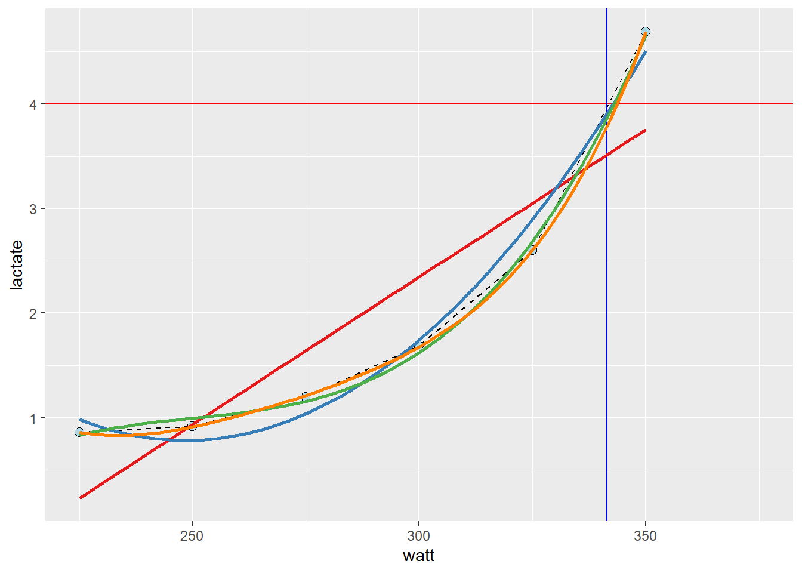

Chapter 13 Linear and curve-linear relationships, and predictions
In the previous chapter we looked at linear relationships, we can imagine these as straight lines. Many things in life are not straight. In this chapter we will add curve-linear relationships to our repertoire. We will start by predicting values.
13.1 Predicting from data
Because of the relationship between inner dimension and our height, we might expect to see a relationship between body height and VO2max.The idea is that we will build a model and use this model to make predictions of our outcome with new data. Later we will hopefully see that this is one of the meany benefits of the powerful regression model technique.
As a first step, it is a good idea to get a visual representation of the prospective model. In the code chunk below we load the cyclingstudy data set from the exscidata package together with loading tidyverse. We then plot the relationship between height and VO2.max. In the ggplot call, a good starting point is to use geom_point together with geom_smooth which will produce a scatter plot with a best fit line. Notice that method = "lm" and se = FALSE are being used to make sure you get a straight line (method = "lm") and no confidence bands (se = FALSE). Copy the code into your own document and run the code.
library(tidyverse)
library(exscidata)
data("cyclingstudy")
# A simple plot of the associtaion
cyclingstudy %>%
filter(timepoint == "pre") %>%
select(subject, group, VO2.max, height = height.T1) %>%
ggplot(aes(height, VO2.max)) + geom_point() + geom_smooth(method = "lm", se = FALSE)We will now construct the model. The lm function (for linear model) take a formula and a data set in its simplest form. We have to save the output of the model in an object to be able to work with it down the line. In the code below I suggest storing the model object as m1.
# Store the data set needed in the model fitting
dat <- cyclingstudy %>%
filter(timepoint == "pre") %>%
select(subject, group, VO2.max, height = height.T1) %>%
print()
# Fit the model
m1 <- lm(VO2.max ~ height, data = dat)The above code will have stored an object in your environment. Using this object we may now make predictions. The manual way of making prediction would be to get the coefficients from the model an use them with new data. In the code chunk below I retrieve coefficients from the model representing the intercept and slope of the model. Remembering the basic mathematics of this simple model tells us that we can predict VO2max using the estimates from the model. These estimates can be retrieved using coef(). The intercept will be the first coefficient (coef(m1)[1]) and the slope will be the second (coef(m1)[2]). Adding the together an multiplying the slope with our new data will get us the prediction.
new_height <- 185
prediction <- coef(m1)[1] + coef(m1)[2] * new_height R has some built in functions for these kind of operations. The predict function can be used to calculate what each observation would look like if it were “on the regression line.” Using predict on the model without any new data will give you the same values as the fitted function, try it out!
# Store output
pred <- predict(m1)
fit <- fitted(m1)
# Plot the values
data.frame(pred, fit) %>%
ggplot(aes(pred, fit)) + geom_point()predict has an argument called newdata, here we can use a new data frame with the same predictors as in the data set used to fit the model. Using this new data set we may do several predictions from our model.
# New Data Frame containing data we want to predict with
ndf <- data.frame(height = c(160, 170, 180, 190))
predictions <- predict(m1, newdata = ndf)Unsurprisingly, an increased height gives us higher predictions of VO2max. What would be your VO2max given this model.
13.2 The workload-lactate relationship
In the cyclingstudy data set, data from lactate threshold tests are recorded for each participant. We need to “wrangle” the data set a bit to get the data in a format more suitable for analysis. In the code below I will first select columns needed for the analyses and the filter to retain one participant and one time-point. These data are then converted from a wide to long (tidy) format using the pivot_longer function. Notice that each of the lactate columns starts with lac., this information can be used in pivot_longer when rearranging the data. In pivot_longer we also convert the values to numeric values using as.numeric. Finally, we plot the data.
The resulting plot (also shown below), shows a point for every lactate measurement. We have also connected the dots with geom_line which draws straight lines between each point. The straight line can be used to interpolate values between the observed lactate values. This is a common technique to calculate a lactate threshold, often defined as the intensity at 4 mmol L
library(tidyverse)
library(exscidata)
data("cyclingstudy")
cyclingstudy %>%
# Select columns needed for analysis
select(subject, group, timepoint, lac.225:lac.375) %>%
# Only one participant and time-point
filter(timepoint == "pre", subject == 10) %>%
# Pivot to long format data using the lactate columns
pivot_longer(names_to = "watt",
values_to = "lactate",
names_prefix = "lac.",
names_transform = list(watt = as.numeric),
cols = lac.225:lac.375) %>%
# Plot the data, group = subject needed to connect the points
ggplot(aes(watt, lactate, group = subject)) +
geom_line(lty = 2) +
geom_point(shape = 21, fill = "lightblue", size = 2.5) Figure 13.1: A workload and lactate relationship
Next figure shows the value of x (watt, intensity) when y (lactate) is set to 4. The lines are added by eyeballing19 the expected value. This is all fine, we have an approximate lactate threshold.
cyclingstudy %>%
# Select columns needed for analysis
select(subject, group, timepoint, lac.225:lac.375) %>%
# Only one participant and time-point
filter(timepoint == "pre", subject == 10) %>%
# Pivot to long format data using the lactate columns
pivot_longer(names_to = "watt",
values_to = "lactate",
names_prefix = "lac.",
names_transform = list(watt = as.numeric),
cols = lac.225:lac.375) %>%
# Plot the data, group = subject needed to connect the points
ggplot(aes(watt, lactate, group = subject)) +
geom_line(lty = 2) +
geom_point(shape = 21, fill = "lightblue", size = 2.5) +
# Adding straight lines at specific values
geom_hline(yintercept = 4, color = "red") +
geom_vline(xintercept = 341.5, color = "blue")Figure 13.2: Interpolation to estimate the lactate threshold, exercise intensity at 4 mmol L-1
To get a better approximation, we could make use of the curve-linear relationship between exercise intensity and lactate accumulation. The “curvier” the relationship, the more wrong the above approximation would be (as Yoda say, would)20. We can add a curve-linear model on top of our plot using the geom_smooth function in our ggplot call. In the code below, we will actually use several polynomial models together with a straight line to assess their fit.
cyclingstudy %>%
# Select columns needed for analysis
select(subject, group, timepoint, lac.225:lac.375) %>%
# Only one participant and time-point
filter(timepoint == "pre", subject == 10) %>%
# Pivot to long format data using the lactate columns
pivot_longer(names_to = "watt",
values_to = "lactate",
names_prefix = "lac.",
names_transform = list(watt = as.numeric),
cols = lac.225:lac.375) %>%
# Plot the data, group = subject needed to connect the points
ggplot(aes(watt, lactate, group = subject)) +
geom_line(lty = 2) +
geom_point(shape = 21, fill = "lightblue", size = 2.5) +
geom_hline(yintercept = 4, color = "red") +
geom_vline(xintercept = 341.5, color = "blue") +
# Adding a straight line from a linear model
geom_smooth(method = "lm", se = FALSE, formula = y ~ x, color = "#e41a1c") +
# Adding a polynomial linear model to the plot
# poly(x, 2) add a second degree polynomial model.
geom_smooth(method = "lm", se = FALSE, formula = y ~ poly(x, 2), color = "#377eb8") +
# poly(x, 3) add a third degree polynomial model.
geom_smooth(method = "lm", se = FALSE, formula = y ~ poly(x, 3), color = "#4daf4a") +
# poly(x, 4) add a forth degree polynomial model.
geom_smooth(method = "lm", se = FALSE, formula = y ~ poly(x, 4), color = "#ff7f00") 
# #fee090 represent color codes in th HEX format, palettes for different color can be found
# here: https://colorbrewer2.org/As we can see in the resulting plot, the different models are not that different around the 4 mmol L-1 mark. However, the linear model is just wrong at around 300 watts, the second degree polynomial model is wrong at 275 watts. The third and forth degree polynomial model does not differ much from observed values or each other.
We may fit these models formally using lm and check their residuals. First we will store the data set in an object called lactate and the use this data set in several lm calls. The same formula can be used as in geom_smooth, but we must use the actual variable names.
lactate <- cyclingstudy %>%
# Select columns needed for analysis
select(subject, group, timepoint, lac.225:lac.375) %>%
# Only one participant and time-point
filter(timepoint == "pre", subject == 10) %>%
# Pivot to long format data using the lactate columns
pivot_longer(names_to = "watt",
values_to = "lactate",
names_prefix = "lac.",
names_transform = list(watt = as.numeric),
cols = lac.225:lac.375) %>%
# Remove NA (missing) values to avoid warning/error messages.
filter(!is.na(lactate))
# fit "straight line" model
m1 <- lm(lactate ~ watt, data = lactate)
# fit second degree polynomial
m2 <- lm(lactate ~ poly(watt, 2, raw = TRUE), data = lactate)
# fit third degree polynomial
m3 <- lm(lactate ~ poly(watt, 3, raw = TRUE), data = lactate)
# fit forth degree polynomial
m4 <- lm(lactate ~ poly(watt, 4, raw = TRUE), data = lactate)
# Store all residuals as new variables
lactate$resid.m1 <- resid(m1)
lactate$resid.m2 <- resid(m2)
lactate$resid.m3 <- resid(m3)
lactate$resid.m4 <- resid(m4)
lactate %>%
# gather all the data from the models
pivot_longer(names_to = "model",
values_to = "residual",
names_prefix = "resid.",
names_transform = list(residual = as.numeric),
cols = resid.m1:resid.m4) %>%
# Plot values with the observed watt on x axis and residual values at the y
ggplot(aes(watt, residual, fill = model)) + geom_point(shape = 21, size = 3) +
# To set the same colors/fills as above we use scale fill manual
scale_fill_manual(values = c("#e41a1c", "#377eb8", "#4daf4a", "#ff7f00"))Figure 13.3: Assessing the fit f different linear models on a exercise intensity to lactate accumulation relationship.
The forth degree polynomial model finds the observed values best, followed by the third degree. This is not strange as the polynomial model with increased degrees has more flexibility to fit to the data. The problem with polynomial models is that you cannot fit a fort degree polynomial model with only four data points. You may also encount some over-fitting to, for example a bad measurement. Let’s settle for the third degree model.
The next step will be to predict x from y. Remember that we have modeled the effct of x on y, i.e. the effect of exercise intensity on lactate. Using predict we may easily predict a lactate value for a specific value of watt. Since we want the inverse prediction we have to use some tricks in our prediction. The code below creates a data set of intensity values watt using the seq function which basically creates a vector of number with a specific distance between them. We can tehn use this vector of numbers to predict lactate values and find the value closest to 4 mmol L-1.
# new data data frame
ndf <- data.frame(watt = seq(from = 225, to = 350, by = 0.1)) # high resolution, we can find the nearest10:th a watt
ndf$predictions <- predict(m3, newdata = ndf)
# Which value of the predictions comes closest to our value of 4 mmol L-1?
# abs finds the absolute value, makes all values positive,
# predictions - 4 givs an exact prediction of 4 mmol the value zero
# filter the row which has the prediction - 4 equal to the minimal absolut difference between prediction and 4 mmol
lactate_threshold <- ndf %>%
filter(abs(predictions - 4) == min(abs(predictions - 4)))Our best estimate of the lacatate threshold is 343. We have approximated the exercise intensity at a specific value of lactate.
There a several ways of doing such calculations, and many other concepts of lactate thresholds exists. Newell (Newell et al. 2007) has developed R code for calculating several of these concepts. The code is a bit old but can be found here. Other have implemented R code in applications to calculate lactate thresholds, for example lactate dashboard.
Most techniques and concepts rely on an underlying regression model.